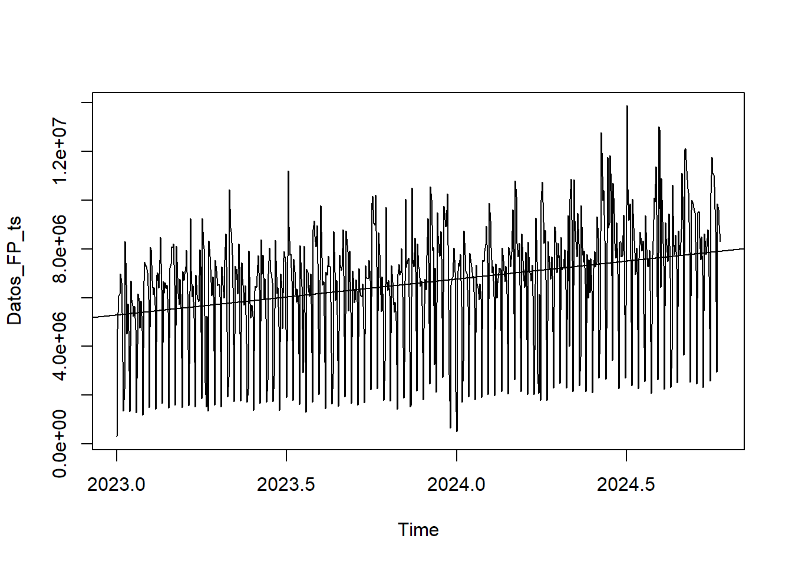
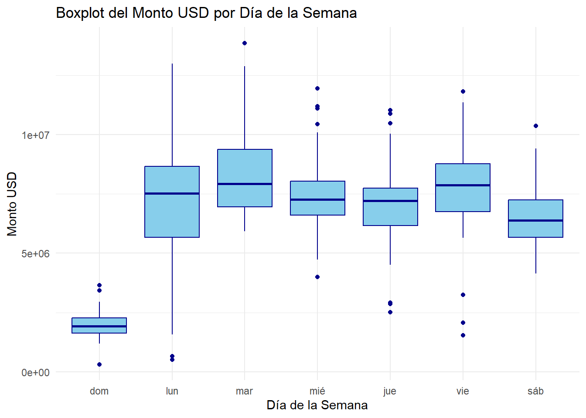
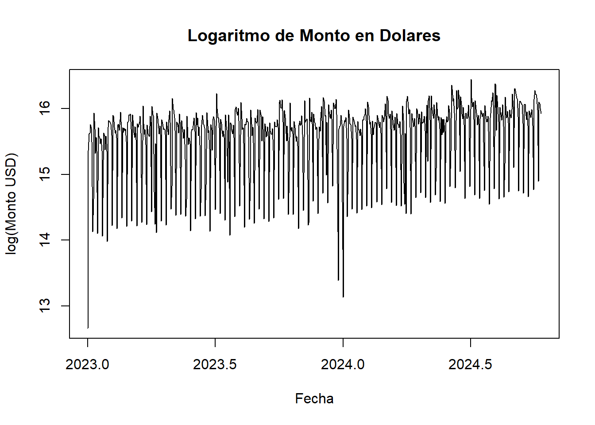

4 HOLT - WINTERS
## Fecha_Pago Monto_USD
## 1 2023-01-01 314473.1
## 2 2023-01-02 4700346.1
## 3 2023-01-03 6069974.1
## 4 2023-01-04 6164948.9
## 5 2023-01-05 6986643.0
## 6 2023-01-06 6616416.04.2 Definición y caracteristicas de la serie.
## Time Series:
## Start = c(2023, 1)
## End = c(2023, 20)
## Frequency = 365
## [1] 314473.1 4700346.1 6069974.1 6164948.9 6986643.0 6616416.0 5392530.2 1368008.4 2248875.5
## [10] 8307518.8 6546327.3 4509599.3 5737621.1 4668733.8 1329182.5 6681862.6 5926830.6 5664752.1
## [19] 5235327.5 5645884.9## Min. 1st Qu. Median Mean 3rd Qu. Max.
## 314473 5732341 7045531 6592872 8074062 13866707La serie de tiempo Datos_FP_ts muestra el comportamiento de los montos de pago en dólares registrados diariamente desde enero de 2023.
- Valor mínimo (Min): El monto más bajo registrado es de 314,473 USD.
- Primer cuartil (1st Qu.): El 25% de los montos registrados son menores o iguales a 5,732,341 USD.
- Mediana (Median): El valor central de la serie es 7,045,531 USD, lo que indica que la mitad de los montos son mayores o iguales a este valor y la otra mitad son menores.
- Media (Mean): El promedio de los montos es de 6,592,872 USD, lo cual está relativamente cerca de la mediana, sugiriendo que no hay una gran asimetría en los datos.
- Tercer cuartil (3rd Qu.): El 75% de los montos son menores o iguales a 8,074,062 USD.
- Valor máximo (Max): El monto máximo registrado es de 13,866,707 USD.

4.3 Gráfico de Caja (Boxplot) por Día de la Semana

El gráfico de cajas muestra la distribución de los montos en dólares (Monto_USD) para cada día de la semana (Dia_semana). El es comparar los montos de pago en función del día de la semana para identificar variaciones, como si ciertos días tienden a tener pagos más altos o más bajos.
En este caso, es notable que el dia domingo se registran valores mas bajos en comparación con los demas dias de la semana.
4.4 Logaritmo de Monto en Dolares
El siguiente grafico permite visualizar la evolución de los pagos en el tiempo, facilitando la observación de cambios y patrones en la serie al suavizar la variabilidad de los datos.

4.5 Aplicacion del modelo Holt-Winter
A continuación se utiliza una serie de tiempo transformada a escala logarítmica para aplicar el modelo de Holt-Winters para ajustar y descomponer la serie.
Se aplica el modelo de Holt-Winters con un componente estacional aditivo (seasonal = “additive”) a la serie Datos_FP_ts2. El modelo de Holt-Winters es un método de suavizamiento exponencial que se utiliza para ajustar y pronosticar series de tiempo con componentes estacionales, tendencia y aleatoriedad.
Estacionalidad aditiva: Se asume que los efectos estacionales son constantes y no dependen del nivel de la serie.
4.8 Predicciones a partir del modelo de Holt-Winters
## Time Series:
## Start = c(2115, 6)
## End = c(2117, 5)
## Frequency = 7
## fit upr lwr
## 2115.714 16.11265 16.67574 15.54956
## 2115.857 15.88687 16.45135 15.32240
## 2116.000 14.82100 15.38687 14.25512
## 2116.143 16.06591 16.63320 15.49862
## 2116.286 16.14283 16.71154 15.57411
## 2116.429 16.04821 16.61837 15.47805
## 2116.571 16.03847 16.61008 15.46686
## 2116.714 16.11836 16.70473 15.53200
## 2116.857 15.89259 16.48040 15.30478
## 2117.000 14.82671 15.41599 14.23744
## 2117.143 16.07162 16.66238 15.48087
## 2117.286 16.14854 16.74079 15.55629
## 2117.429 16.05392 16.64768 15.46017
## 2117.571 16.04418 16.63946 15.44891La tabla muestra cómo el modelo de Holt-Winters estima las fluctuaciones diarias del monto en dólares en los próximos 14 días, reflejando una variabilidad ligera. Los intervalos ayudan a interpretar la predicción en función de su incertidumbre, lo que es clave para evaluar posibles escenarios en los valores futuros de los pagos.
4.9 Funcion exponencial para regresar a la escala original.
## fit upr lwr
## 1 9945695 17465553 5663540
## 2 7935638 13955019 4512667
## 3 2733240 4813200 1552107
## 4 9491504 16738052 5382266
## 5 10250405 18102176 5804319
## 6 9325010 16491689 5272706
## 7 9234597 16355581 5213987
## 8 10002685 17979182 5564976
## 9 7981110 14366357 4433840
## 10 2748902 4955400 1524895
## 11 9545892 17233686 5287554
## 12 10309141 18639424 5701807
## 13 9378444 16982250 5179244
## 14 9287513 16843192 5121232Esta salida muestra las predicciones y los intervalos de confianza de un modelo de serie de tiempo para el monto en dólares. Cada fila representa un día.
fit: Valor predicho central en dólares. Es el valor estimado para el monto en este periodo.
upr: Límite superior del intervalo de predicción en dólares. Representa el valor máximo esperado en ese intervalo, proporcionando un margen de incertidumbre hacia arriba.
lwr: Límite inferior del intervalo de predicción en dólares. Indica el valor mínimo esperado, estableciendo el margen de incertidumbre hacia abajo.
Este intervalo entre upr y lwr ayuda a entender la variabilidad y la confiabilidad de la predicción en cada periodo.